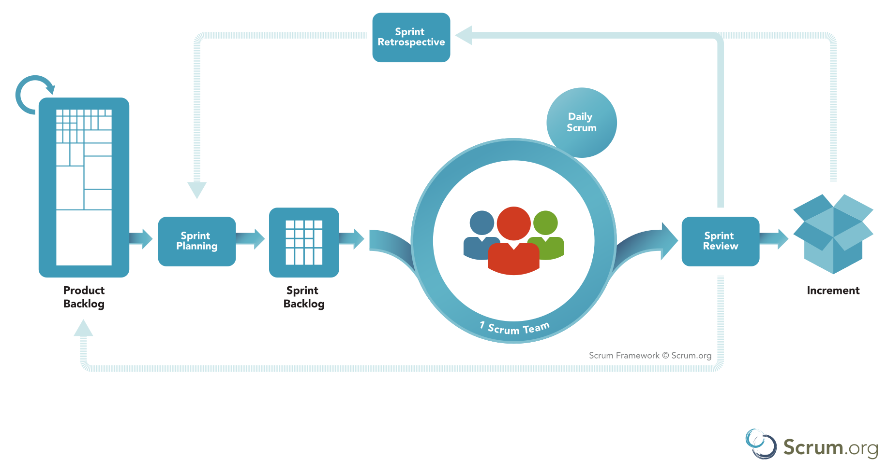
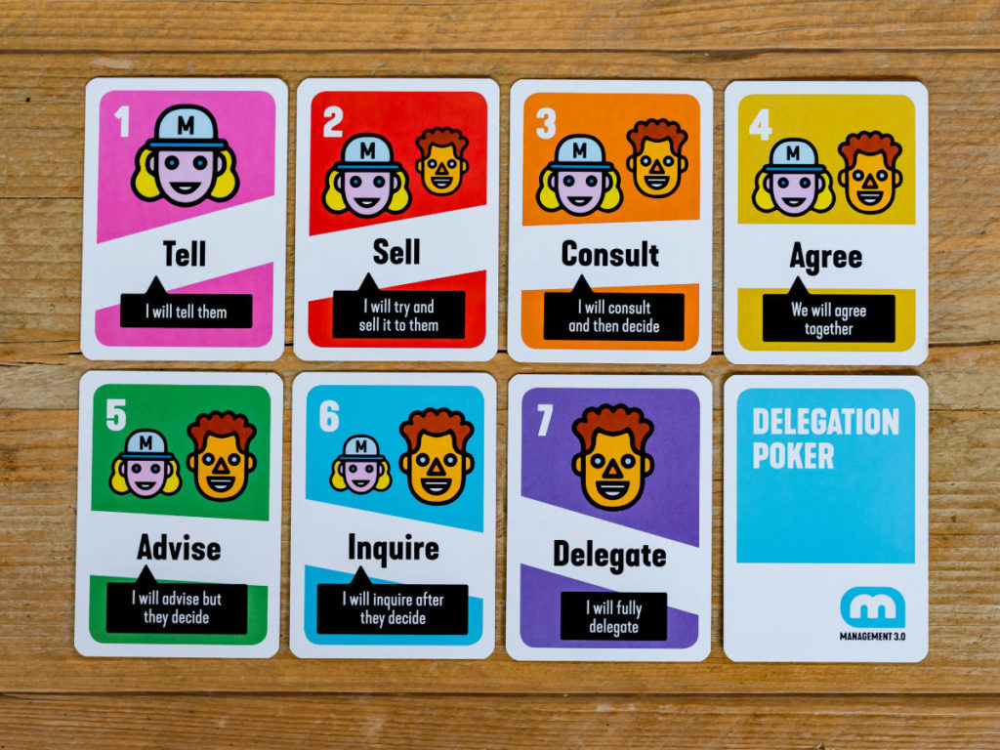
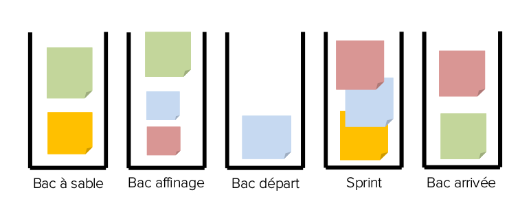

Scrum Master
Gaspard POINTEAU@Gaspard_PO
Vous êtes qui ?
Vous voulez quoi ?
Et sinon, ça va ?
SCRUM
Scrum n'est pas une méthode, mais un framework.
3 pilliers
- Transparence
- Inspection
- Adaptation

Scrum

Scrum Team
- Product Owner
quoi, pourquoi, dans quel ordre
- Dev team
comment, combien
- Scrum Master
formation, coaching, facilitation, promotion de Scrum
Les PO et SM peuvent faire partie de l'équipe de Dev
Equipe unie : si ça échoue, c'est de la responsabilité de tout le monde.
Si ça réussit, c'est grace à tout le monde.
Partagez les primes ?
Les autres parties prenantes

Product Owner
- Responsable du Produit
- Objectif : maximiser la valeur produite
- Une personne seule
Responsable du Produit : quoi, pourquoi, dans quel ordre
- Priorise les fonctionnalités
- S’assure que l’équipe partage la même vision et la même compréhension des enjeux
- Formalise une expression de besoin avec différents niveaux de granularité, en fonction de l’importance des fonctionnalités
- Valide ou non les fonctionnalités livrées
- Communique sur les progrès réalisés et l’avancement du produit
Travaille sur 2(3 ?) domaines :
- Doit être disponible pour l'équipe
- Rencontre et représente les utilisateurs
et les stakeholders ?
- Une seule personne
- Mais peut représenter un comité
C'est un vrai métier qui nécessite de la formation et du temps.
- Bonne connaissance du domaine métier
- Bonne connaissance du contexte commercial
- Capacité à partager sa vision du produit
- Maitrise des techniques de définition de produit
- Capacité à prendre des décisions rapidement et à effectuer des choix structurants
- Capacité à détailler au bon moment
- Esprit ouvert au changement
- Aptitude à la négociation
La PO intervient tout le long du sprint :
pour clarifier des US en cours,
pour reprioriser si problème / blocage,
pour affiner le sprint suivant.
Le PO n'est pas
- Un chef, un boss, un manager
- Quelqu'un qui décide de la capacité du sprint
- Quelqu'un qui impose des deadlines
- Quelqu'un qui a déjà un autre plein temps et aide l'équipe "en plus"
Dev Team
- entre 3 et 9 personnes
- Cross-fonctionnelle et autonome
- Stable
- Responsable du Sprint
Responsable du Sprint : Comment, Combien
- Elle s’engage sur la réalisation du produit, lors d’un sprint
- Elle estime l'effort nécessaire
- Elle découpe en tâches les fonctionnalités demandées
- Elle s’auto-organise en interne
- Elle respecte les priorités fixées par le Product Owner
- Elle collabore avec le Product Owner
- Elle présente le résultat au Product Owner et aux utilisateurs
- Elle aide le PO à affiner les prochaines stories
Scrum considère que tout le monde est "dev" et ne fait pas de différences entre codeurs, testeurs, graphistes ...
développer n'est pas uniquement coder
Cross-fonctionnelle et autonome =
tout le monde ne sait pas tout faire, mais tous ensemble, on peut tout faire.
Sans avoir besoin de demander de l'aide extérieure.
Autonome = l'équipe peut déployer quand elle veut.
"L'anarchie est la plus haute expression de l'ordre."
Élisée Reclus
"L'anarchie, c'est l'ordre sans le pouvoir."
Pierre-Joseph Proudhon
Auto-organisation != absence d'organisation
"Un grand pouvoir implique de grandes responsabilités"
Oncle Ben, Spiderman.
"Prenez le révolutionnaire le plus radical et placez-le sur le trône de toutes les Russies, ou confiez-lui un pouvoir dictatorial [...] et avant un an il sera devenir pire que le Tsar lui-même."
Michel Bakounine
QA, Test, Qualité
C'est à l'équipe de s'en occuper.
S'il y a un service externe, ça veut dire que l'équipe peut livrer n'importe quoi, puisque la
qualité
est faite par d'autres.
La qualité en IT, c'est un logiciel maintenable et sans bug, ou des documents traçables ?
Autonome, ça veut aussi dire sur ce qui n'est pas le code ?
Ops, admin système.
UX, UI
Service légal, expertise métier
Traduction
Communication, marketing
Et les tâches annexes, hors produit ?
Achats ?
Formation ?
Recrutement ?
Congés, absences ?
Paie, primes ?
7 levels of delegation
Rappel : c'est vraiment l'équipe qui se gère et qui décide.
Les gens qui ne produisent pas ne donnent pas de consignes sur la façon de produire.
Scrum Master
- n'a aucun pouvoir hierarchique
- aide, forme et facilite
- responsable de la promotion de Scrum
- devrait s'effacer
Travaille sur 3 domaines :
- Aide le PO
- Aide l'équipe
- Aide l'organisation
Aide le PO
- S'assurer que les objectifs, le périmètre et le domaine du produit sont compris par tous
- Trouver des techniques pour une gestion efficace du Backlog produit
- Aider l'équipe Scrum à comprendre le besoin de clareté et concision des éléments du Backlog
- Comprendre la planification de produits dans un contexte empirique
- S'assurer que le PO sait comment organiser le Backlog produit pour maximiser la valeur
- Comprendre et mettre en œuvre l'agilité
- Faciliter les événements Scrum
Aide l'équipe de Dev
- Coacher l'équipe de développement en matière d'auto-organisation
- Aider l'équipe de développement à créer des produits de grande valeur
- Supprimer les obstacles
- Faciliter les événements Scrum
- Coacher l'équipe de dev dans des environnements organisationnels où Scrum n'est pas encore complètement adopté et compris
Aide l'organisation
- Accompagner l'organisation dans son adoption de Scrum
- Planifier les implémentations de Scrum au sein de l'organisation
- Aider les employés et les parties prenantes à comprendre et adopter Scrum
- Provoquer les changements qui augmentent la productivité de l'équipe Scrum
- Collaborer avec d'autres Scrum Masters pour accroître l'efficacité de l'application de Scrum au sein de l'organisation
Coaching, formation
Le travail de Scrum-Master n'est pas de donner des solutions, mais d'aider l'équipe et l'organisation à voir ses vrais problèmes et à les résoudre.
Coaching, formation
Position Basse
Beaucoup de questionnement plutôt que des vérités
Faire verbaliser les gens, rendre visible ce qui est un secret de Polichinel
Laissez les gens se planter : une itération de perdue, c'est énormément d'apprentissage de gagné
Coaching, formation
Position Haute
Utilisez votre certification et vos super-pouvoirs uniquement pour demander à la direction d'écouter les équipes et de respecter les principes Agiles.
Facilitation
Le SM n'est jamais le bénéficiaire de l'événement.
Ni partie-prenante
- Timeboxer
- faire-tourner la parole
- aider à s'exprimer
- être attentif au besoin de pauses
- trouver des nouveaux formats
- maintenir un environnement bienveillant
Le Scrum-master n'est pas
- Un chef, un boss, un manager
- Un secretaire
- Un tech lead, un architecte
- Un porte-parole
- Le centre de l'attention des meetings
- Quelqu'un qui prend des décisions
Avoir un ancien Chef de projet en Scrum Master est un gros gros risque
Scrum MASTER
nécessite une bonne expérience en projet Agile :
Acheter une certification ne suffit pas
Pour les équipes matures, peut être un rôle tournant parmi l'équipe.
voir même ne pas avoir de Scrum Master.
TL; DR
PO : priorise le backlog.
équipe : choisit combien d'éléments elle prend et comment elle les traite.
SM : aide et facilite pour s'auto-organiser
Il n'y a pas de Hierarchie, aucun des 3 roles n'est le chef d'un autre.
Scrum
Timebox
Une durée limite à ne pas dépasser.
- Sprint : un mois max
- Planning : une journée max
- Daily Scrum : 15 minutes max
- Revue : 4h max
- Retro : 3h max
Timebox
Pour une semaine de sprint.
- Planning : 2h/semaine de sprint
- Revue : 1h/semaine de sprint
- Retro : 45min/semaine de sprint
- Daily Scrum : 15 minutes max
Sprint
Une itération, de 1 à 4 semaines
Durée fixe et stable
L'entrée est le backlog, et ce qui est choisi par l'équipe devient le Sprint Backlog
Ce qui est livré en sortie de sprint peut être mis en production
L'équipe prend les US dans l'ordre.
Il faut finir, avant de commencer autre chose.
Limiter le Work In Progress
Si une US ne tient pas dans le sprint, c'est que l'US n'est pas assez découpée, pas que le sprint est trop court.
Le sprint fini quand le temps est fini. Si toutes les US ne sont pas finies, tant pis, elles seront pour le prochain sprint.
D'où l'intérêt de faire des sprints très courts et de livrer à chaque fois, pour décaler de très peu.
Pause inter-sprints ?
Certaines équipes font revues-rétro le jeudi et redémarrent le lundi,
en se gardant un vendredi
de
pause.
Pour faire de la veille technique, aider les autres projets, faire des dojos, se former, discuter avec des collègues, s'occuper des tâches annexes, de l'entreprise ...
Ou juste pour se reposer.
Sprint : attention, il s'agit en fait d'une course de fond.
Faites des pauses et allez vous coucher.
Backlogs
Bac à sable
En vrac, les idées, les retours d'utilisation
Bac d'affinage

De pas prioritaires, énormes
à découpées, détaillées, prioritaires, prètes à être développées pour le prochain sprint.
Bac de départ
Stories prètes à être développées, ordonnées par priorité, par valeur métier.
Pas la peine d'avoir plus de 2 sprints d'avance. (voir 1,5)
Backlog-refinment / Affinage
L'affinage, le découpage en US est une activité qui doit être faite très régulièrement, par l'équipe et le PO
L'équipe n'est pas forcément au complet (petits groupes).
Une solution peut être de planifier des meetings timeboxés pour ne pas oublier.
Le Scrum Guide dit : 10% du temps de l'équipe.
15 minutes par jour après le daily pour discuter d'une US ?
2h / semaine, en binome + PO ?
Une demi-journée tous ensemble ?
Sprint Planning
Timeboxé : 2h / semaine
Backlog produit en entrée, backlog de sprint et plan d'action en sortie
Equipe de dev et PO
Le Backlog produit est ordonné par priorité par le PO
Le PO rappelle le contexte de release, l'équipe scrum fixe un but
L'équipe de dev prends des éléments selon cet ordre et elle seule décide leur nombre
Les 1ères US sont découpées en tâches techniques et on a un plan d'actions
Les tâches sont estimées ?
Il est de la responsabilité de l'équipe de dev d'accepter ou non d'autres US.
Et de prendre en compte le temps de se former, de nettoyer le code, de supprimer les bugs ...
Estimations en Point : suite de Fibbonacci
1, 2, 3, 5, 8, 13.
Estimations en taille de T-shirt
XS, S, M, L.
Et toujours :
?
pause
trop grand
Planning Poker
On étalonne avec des US précédentes
- Pour chaque US,
- Chacun choisi secrètement une carte
- On révèle en même temps
- On discute pour régler les désacords et clarifier
- On arrive à un consensus
Wall Planning
On étalonne avec des US précédentes
On fait des colonnes par taille,
On place les US dans les colonnes.
eXtreme Quotation
- On met toutes les US en vrac sur une table
- Itération 1 : on les classe par colonne
- Itération 1 : pas de discussion
- Itération 2 : on inverse certaines cartes
- Itération 2 : on note chaque mouvement
- On discute des US à problèmes (celles qui ont bougé)
Les Estimations sont toujours fausses
L'intérêt des estimations n'est pas dans le chiffre farfelu qu'on obtient, mais dans la discussion.
Les Estimations ne sont utilisables que si le code est de qualité et que la vélocité de l'équipe est stable.
Bouger des post-its, "faire de l'agile" ne sert à rien avec du mauvais code, des équipes mal formées et du turnover.
NoEstimate
Si on découpe en suffisamment petit et qu'on a des grandes quantité d'US, on considère que les US font toutes la même taille
On fait alors de la statistique.
Plus les US sont petites, moins l'erreur d'estimations est grave.
Daily Stand-up Meeting
Vous en faites ? Pourquoi ? comment ?
Et vous avez des problèmes ?
Timeboxé : 15 minutes max.
Pour l'équipe de Dev.
Pour parler de l'avancement du sprint et s'organiser dans l'équipe.
Debout, sans PC.
Par les Devs, pour les Devs.
C'est uniquement pour l'équipe de Dev. Le PO ou d'autres peut y assister, mais ne participent pas.
Le Scrum Master aide l'équipe à faire le DSM, mais ne participe pas.
Il ne s'agit pas de faire du reporting à une personne, mais de s'organiser dans l'équipe.
- être au courant
- mettre au courant
- demander de l'aide
- proposer de l'aide
- organiser la journée
- lancer la journée
- être transparent sur l'avancement
Par personne
Qu'ai je fait hier pour réaliser l'objectif du sprint ?
Que vais je faire aujourd'hui pour réaliser l'objectif du sprint ?
Ai-je un problème ?
Par US
Où en est on ?
Que reste il à faire pour finir ?
A t'on des blocages ?
Comment s'organise t'on pour la finir ?
Commencer par les plus proches de la fin et les plus prioritaires
Checklist
- Chaque personne/binôme à une tâche ?
- Chaque tâche à une personne / binôme ?
- Chaque blocage a une action ?
- On est confiant dans l'avancement du Sprint ?
Equipe autonome, auto-organisé et sans hierarchie
Ce n'est pas du reporting au PO, au SM, à un Lead Dev.
C'est un travail d'équipe : si quelqu'un parle d'un problème, alors c'est le problème de toute l'équipe
Le Scrum Master peut aider, mais n'est pas indispensable
15 minutes maximum
Ne pas traiter les problèmes, mais les noter.
Boite à meuh
bloquer à 15 minutes
Debout ! Sans PC.
Différencier fini / fait.
Parler en US, pas front/back.
Aléatoire
Minute de silence
Faire tourner l'animation, ne pas avoir de Scrum Master
Démo - Revue
Timeboxé : 1h / semaine
On montre ce qu'on a produit et on a un feedback
Equipe Scrum, et on invite tous ceux qui sont concernés
On invite plein de monde
- Les gens qui paient le produit
- Les gens qui utilisent le produit
- Les gens qui exploitent le produit
- N'importe qui intéressé par le produit
- N'importe qui intéressé par l'agilité et l'équipe
- ...
L'équipe n'est pas jugée, ce n'est pas un tribunal
On parle du produit uniquement.
- Deux phases
- On présente les US finies
- On recueille des feedbacks
La démonstration du produit se prépare en avance.
Il faut un scénario qui reprend les tests d'acceptances (cas nominaux)
On ne présente que les US finies
Le recueil des feedbacks d'usages permettent d'alimenter le backlog pour les sprints futurs.
Donc on n'oublie pas de les noter !
Ne négligez pas les revues : c'est très bon pour le moral.
On présente ce qu'on a produit, donc on se rend compte qu'on a avancé.
On rencontre des utilisateurs, qui sont (généralement) contents, donc ça fait plaisir et c'est bon pour le moral.
Retro
Vous en faites ? Pourquoi ? comment ?
Retro
L'évènement le plus important de l'agilité, le seul indispensable.
But : faire le point sur la façon de travailler.
2 boucles de feedback :
Revue : sur le produit
Retro : sur les méthodes
Timeboxé : environ 45min / semaine de sprint.
Pour l'équipe Scrum.
Pour parler des pratiques, pas du contenu du sprint.
Pour l'équipe Scrum :
Le PO faisant partie de l'équipe, sa présence est indispensable.
Des "invités" peuvent y assister, mais sans participer.
Même sans participer activement, certaines personnes ont une influence
néfaste.
N'hésitez pas à interdire la rétro à certains managers.
Le but étant de parler des problèmes et de trouver des solutions, il est absolument nécessaire d'avoir de la confiance, de la sécurité et de la bienveillance pour les participants.
Déroulement
- ouvrir
- récupérer des données
- analyser (5 pourquois)
- proposer des solutions
- choisir
- fermer
N'hésitez pas à parler du positif, de ce qui s'est bien passé
Et à l'analyser aussi
Acceptez de supprimer les pratiques inutiles
Essayez des trucs
Choix des actions
Si vous avez 15 actions, vous n'en réaliserez aucune. Prenez en 2.
- Vote uninominal
- Dot Voting
- Vote par note
- Vote de Condorcet / classement
- Classement difficulté / valeur
- Coupe du Monde
- Tirage au sort
- ...
Si vous n'en faites pas, il est probable que les 2 premières rétros aient l'air inutiles, avec uniquement des plaintes et rien en sortie.
C'est nécessaire pour crever l'abscès, et ensuite on peut en faire d'autres de plus constructives.
Ne repoussez pas les rétros, faites les.
Ne pas faire de retro parce qu'on est à la bourre, c'est comme un courreur cycliste qui ne prends pas le temps de changer un pneu crevé parce qu'il est déjà en retard.
Et les Scrum-masters dans tout ça ?
Ils peuvent aider à faciliter, à animer.
Les évènements ne sont pas pour eux, ils sont pour l'équipe.
Jamais indispensables.
Si la réunion se focalise sur le SM, ne pas hésiter à faire la prochaine sans lui !
Quand peut on dire qu'une tache est finie ?
Définition de Fini
DoD: Definition Of Done
- Indispensable
- Partagée
- Transparente
- Evolutive
Créée par l'équipe de dev, en fonction des autres équipes de l'organisation
Si plusieurs équipes : les DoD doivent permettent de s'intégrer.
permet d'avoir un incréement utilisable
définit le niveau de qualité de l'équipe
à rediscuter à chaque rétro.
- Les test fonctionnels passent
- pas de régression
- code relu
- doc écrite
- le code est déployé sur un environnement de pré-prod
permet d'avoir un incréement utilisable
définit le niveau de qualité de l'équipe
Cheat Certification
throughout development of the software
Product => PO
Scrum => SM
Sprint => Dev
/!\ may / must / should
Pas d'architecte, pas de sprint 0
Dev Team == Developers (même si ça peut être des testeurs ou autres)
Dev Team : Cross-functional
Dev team : unie, donc tout le monde est responsable, pas d'individualité.
Tout le monde peut faire de tout.
le PO priorise
Lisez le scrum guide, en anglais
Lisez les glossaires
faites plein d'examens blancs, et ceux des autres rôles